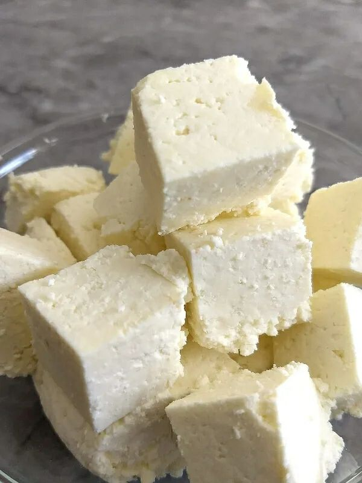

Our Homemade Paneer: Purity and Goodness
At Lassi Valley, we believe that the best foods are made with care, just like our lassis. Our paneer is no exception. We make it the traditional way, ensuring every block is soft, fresh, and packed with flavor. There's a noticeable difference between store-bought paneer and the wholesome goodness of a homemade product.
Positive Impacts of Homemade Paneer
-
Purity and Quality: You control the ingredients. By making paneer at home, you avoid the preservatives, additives, and stabilizers often found in commercial products.
-
Nutrient Rich: Homemade paneer retains more of its natural nutrients. It's an excellent source of protein, calcium, and healthy fats, crucial for strong bones and overall health.
-
Superior Taste and Texture: Freshly made paneer is incredibly soft, creamy, and has a subtle, sweet flavor. It melts in your mouth and absorbs the flavors of any dish beautifully.
-
Ethical and Sustainable: Making your own paneer from locally sourced milk supports local farmers and reduces the environmental impact of large-scale production.
Traditional Method: How to Make Paneer at Home
This simple, time-tested recipe will guide you to a perfect block of paneer every time.
-
Heat the Milk: Bring 1 liter of full-fat milk to a boil in a heavy-bottomed pan, stirring occasionally to prevent it from sticking.
-
Add Coagulant: Once the milk is boiling, turn off the heat. Slowly add a coagulant like lemon juice (2-3 tablespoons) or white vinegar (2-3 tablespoons). Stir gently.
-
Separate Curds: The milk will begin to curdle and separate into solid white curds and a greenish liquid (whey). Stop adding the coagulant as soon as the separation is complete.
-
Strain the Curds: Place a muslin cloth or a cheesecloth over a large bowl and pour the curds and whey into it. This will separate the solids.
-
Rinse and Squeeze: Gently rinse the curds with cold water while they are still in the cloth. This removes the taste of the lemon or vinegar. Squeeze out all the excess water.
-
Press the Paneer: Gather the cloth into a tight bundle and place it on a flat surface. Put a heavy object (like a pot filled with water or a flat stone) on top for 1-2 hours to press the curds into a firm block.
-
Enjoy: Once pressed, your fresh, homemade paneer is ready! Cut it into cubes and use it in your favorite dishes.
Note: You can save the leftover whey and use it as a base for soups, curries, or to knead dough for a healthier, protein-rich bread.